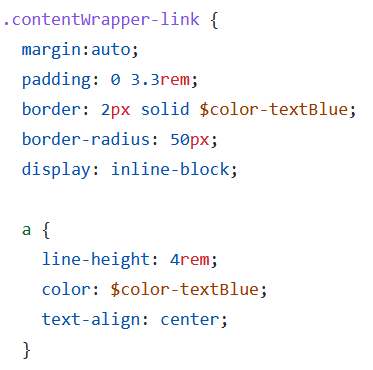
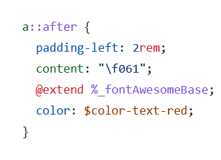

Mettre à la bonne taille l'élément contenant du texte
On applique au parent
display:inline-block

Centrer le texte dans son parent
Mettre le parent en position relative
mettre le bloc de texte en absolute
Pour centrer au milieu de la hauteur
le texte en top: 50%
Appliquer un transform:translateY(-50%)
Pour centrer en largeur --> text-align: center
Les fontAwesomes
Comment les chargées dans nos projets drupal
On déclare l'élément avec un content
On doit impérativement ajouter la classe fontAwesome (fontFamily avec les caractéristiques.
Dans les projets Adimeo il y a un extend de placeholder

Les positions
Position relative au parent et absolute à l'enfant
Position relative
Définit des propriétés haut, bas, gauche et droite à un élément. La propriété l'amènera à s'ajuster à partir de sa position normale. Les autres objets ne combleront pas le vide
Position absolute
Un élément avec cette position le fera s'ajuster par rapport au parent. Si aucun parent n'est présent il s'ajustera avec le corps du document
Position fixe
La propriété amène l'élément à rester toujours au même endroit même si la page défile
Les images
Pour ajouter un filtre à une image
On met l'image dans une div
On met le parent en position relative, c'est à dire la div qui contient l'image
On définit un pseudo-élément after (qui sera l'image filtre) qui aura :
un content vide
une position absolute
un top et left à 0
une largeur et hauteur maximum à 100% (selon les besoins
l'image dans une balise img
L'image est en position absolute aussi
une largeur à 100%
un top et left à 0 aussi
dès lors l'image (qui sert de filtre) sera positionnée sur l'image en question, bien penser à la transparence.